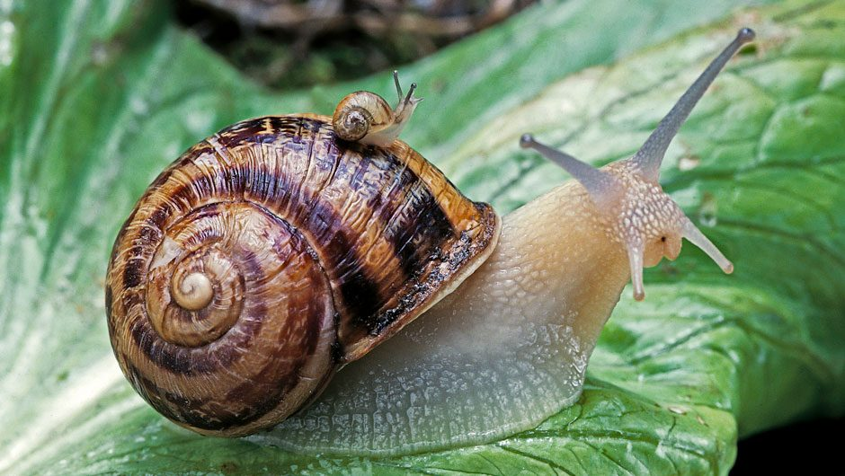
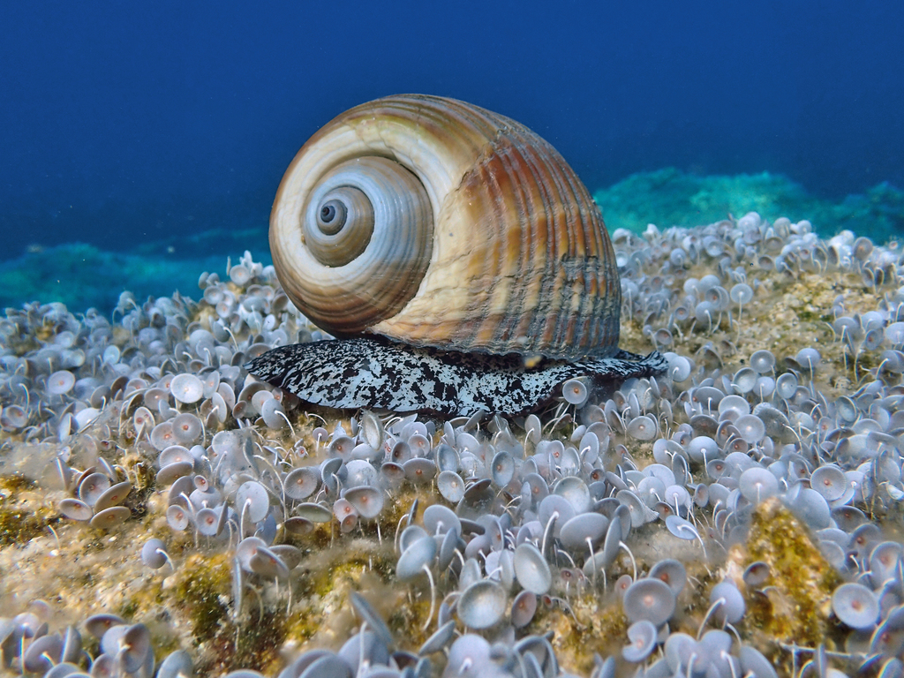

Snails are a type of gastropod that are shelled. Snails have many different species including land snails, sea snails, and freshwater snails. They are famous for moving very slow, their max speed being 0.03 miles per hour.
 The rings on a snail's shell indicate its age, just like trees with their growth rings.
Snails can have up to 20,000 teeth, having the most teeth of any animal in the world, and their teeth is five times stronger than spider silk, making it the strongest biological material on Earth. It can withstand the same pressure that would turn carbon into diamonds.